9 Spatial econometrics
Spatial econometrics is a very dynamic field in modern econometrics. Geolocated data are now frequently available, even when the data doesn’t concern geographic entities like countries, regions or towns, but households or firms. From their geographic coordinates, one is able to define for every observation a set of neighbors, and the interactions between neighbors can then be taken into account. There are two very different types of geographical data: vectors and rasters. A vector is a point or a set of points that define a line. A raster is a grid that contains the value of one variable (for example, a numeric indicating the elevation or a factor indicating land use). Relatively recently, two R packages have emerged that provide plenty of function that enables to deal easily with vectors and rasters. These are respectively sf (simple feature) and terra.1 In this chapter, we’ll consider only vectors.
The first two sections are devoted to simple features; Section 9.1 presents the structure of simple features objects and Section 9.1.2, using the example of a spatial RD design, illustrates how to deal with simple features in a statistical analysis. Section 9.3 deals with the detection and the measurement of spatial correlation. Finally, Section 9.4 presents some popular spatial models, namely the spatial error and the spatial autoregressive models.
9.1 Simple features
In a spatial statistical analysis, the first task is to get geographical information about the observations. This is usually done by importing external files in R, for example shapefiles. This task is performed by the sf library and the result is an sf object.
Structure of a simple feature
To understand what a simple feature is, it is best to construct a small one “by hand”. The geographical representation of an observation is an sfg for simple feature geometry. It can be a point, a set of points that form a line or a polygon if the line ends where it started. We first load the sf package:
The message indicates that sf uses three important external libraries:
- GEOS to compute topological operations,
- GDAL to read external files with a large variety of formats,
- PROJ to transform the coordinates in a specific CRS (coordinate reference system).
We consider in this example the three main cities in France. For Paris, the latitude2 is \(48.87\) and the longitude3 is \(2.33\). Most of sf’s functions start with st_. The st_point function can be used to construct a sfg (simple feature geometry) for Paris, the argument being a numeric vector containing the longitude and the latitude.
We then perform the same operation for Lyon and Marseilles:
We then construct a sfc (simple feature column) which is a set of sfgs, using the st_sfc function. The different elements are entered as unnamed arguments of the function and a crs argument can be used to specify the CRS. Three formats exist to describe the CRS: proj4string (a character string), EPSG (an integer), and WKT, for well known text (a list). We can use here either "+proj=longlat +datum=WGS84 +no_defs" or 4326. The datum is the representation of the earth from which the latitudes and the longitudes are computed.
cities_coords <- st_sfc(paris, lyon, marseilles, crs = 4326)
cities_coordsGeometry set for 3 features
Geometry type: POINT
Dimension: XY
Bounding box: xmin: 2.33 ymin: 43.3 xmax: 5.37 ymax: 48.87
Geodetic CRS: WGS 84Printing the sfc gives interesting information, as the bounding box (the coordinates of the rectangle that contains the data) and the CRS. Finally, we can construct a sf object using st_sf by binding a data frame containing information about the cities and the sfc.
cities_data <- tibble(pop = c(2.161, 0.513, 0.861),
area = c(105.4, 47.87, 240.6))
cities <- st_sf(cities_data, cities_coords)
citiesSimple feature collection with 3 features and 2 fields
Geometry type: POINT
Dimension: XY
Bounding box: xmin: 2.33 ymin: 43.3 xmax: 5.37 ymax: 48.87
Geodetic CRS: WGS 84
pop area cities_coords
1 2.161 105.40 POINT (2.33 48.87)
2 0.513 47.87 POINT (4.85 45.76)
3 0.861 240.60 POINT (5.37 43.3)A sf is just a data frame with a specific column that contains the coordinates of the observations. This column (called the geometry column) can be extracted using the st_geometry function:
cities %>% st_geometryand is “sticky”, which means that if some columns are selected, the geometry column is always returned along with the selected columns, i.e.:
cities %>% select(pop)returns pop and cities_coords, even if the latter colon was not selected. We can then plot our three cities, along with a map of France, which is obtained using the geodata::gadm function.4
france <- geodata::gadm("FR", 1, ".")france is not an object of class sf,5 so we first coerce it to a sf using the st_as_sf function, and then we extract the geometry and the series called NAME_1 which contains the name of the regions:
Imported vector data are often large:
and they can be simplified using the rmapshaper::ms_simplify function, with a keep argument which indicates the degree of simplification (\(0.01\) means that we seek to obtain a sf 100 times lighter than the initial one).
france <- france %>%
rmapshaper::ms_simplify(keep = 0.01)
france %>% object.size %>% format("MB", digits = 2)
## [1] "0.07 Mb"sf provides a plot method to get quickly a map of the data. Note that a thematic map is plotted for all the series of the sf, and it is therefore recommended to select first a unique series. If one is only interested in the vectors, they can be extracted before plotting using st_geometry:
For more advanced maps, several specialized packages are available, in particular tmap (Tennekes 2018) and mapsf (Giraud 2023). In this chapter, we’ll only use ggplot, which provides a geom_sf function. This geom is very special compared to other geoms, as the kind of geom that is plotted depends on the geometry column of the sf: if cities is provided as the data argument, points will be plotted; but if france is provided, polygons will be drawn. In the following code, we start with france as the data argument of ggplot and then the call to geom_sf results in the drawing of the administrative borders of French regions. Then we use a second time geom_sf with this time cities as data argument, so that points are drawn for the three cities. We use here aes(size = pop) so that the size of the points is related to the population of the cities. The result is presented in Figure 9.1.
france %>% ggplot() + geom_sf() +
geom_sf(data = cities, aes(size = pop))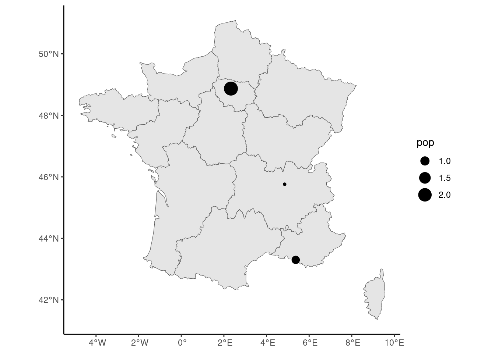
sf provides several functions to compute values of interest. For example, to get the distance from Paris to Lyon and Marseilles, we would use:
st_distance(cities[1, ], cities[2:3, ])
## Units: [m]
## [,1] [,2]
## [1,] 394508 662105st_distance always returns a matrix, the number of elements of the first (second) argument being the number of rows (columns) of the matrix. If only one argument is supplied, the result is a square matrix with 0 on the diagonal. Note that the numbers have a unit of measurement, which is here meters. To define a unit and to convert from one unit to another, the units package provides the set_units function. Consider the following example: we first provide a numeric (\(42.195\)), we define its unit as kilometers, and then we convert it to miles:
Even when the conversion is simple, it is advisable to use set_units instead of applying the conversion “by hand”:
The numerical values are the same, but in the second case the unit hasn’t changed and is still kilometers. st_area computes the area of a polygon:
Computation on sf objects
The regression discontinuity framework can be adapted to consider geographic discontinuities. Some entities are considered on both sides of a border and the forcing variable is then the distance to the border.6 The us_counties data set contains the borders of US counties:
Simple feature collection with 3141 features and 4 fields
Geometry type: MULTIPOLYGON
Dimension: XY
Bounding box: xmin: -19940000 ymin: 2147000 xmax: 20010000 ymax: 11520000
Projected CRS: WGS 84 / Pseudo-Mercator
# A tibble: 3,141 × 5
fips gid state county geometry
* <chr> <chr> <chr> <chr> <MULTIPOLYGON [m]>
1 01001 USA.1.1_1 Alabama Autauga (((-9675520 3850831, -9652842 385…
2 01003 USA.1.2_1 Alabama Baldwin (((-9798375 3599675, -9797718 360…
3 01005 USA.1.3_1 Alabama Barbour (((-9508473 3713483, -9545463 371…
# ℹ 3,138 more rowsKumar (2018) investigates the effect of a legal restriction on home equity extraction which is specific to Texas on mortgage defaults. Kumar measures mortgage default rates in Texas and in the bordering states and compares mortgage default rates for counties which are closed to the Texas border (on both sides). Let’s first plot the map of the counties, using ggplot and geom_sf (see Figure 9.2):
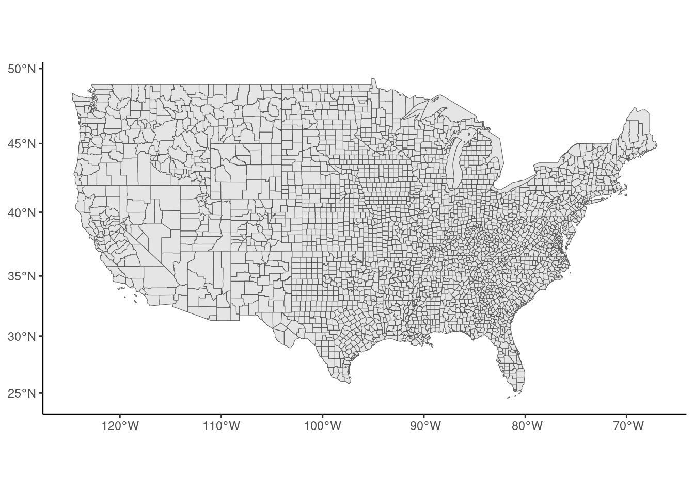
The polygons can be merged using the group_by / summarise functions of dplyr. If the sf is grouped by states, the statistics computed by the summarise function is performed at the state level and the geometry now contains the coordinates of the states. With a void call to summarise, we get only this new geometry, and we can use it to plot a map of states (see Figure 9.3):
states <- us_counties %>%
filter(! state %in% c("Alaska", "Hawaii")) %>%
group_by(state) %>%
summarise()
states %>% ggplot() + geom_sf()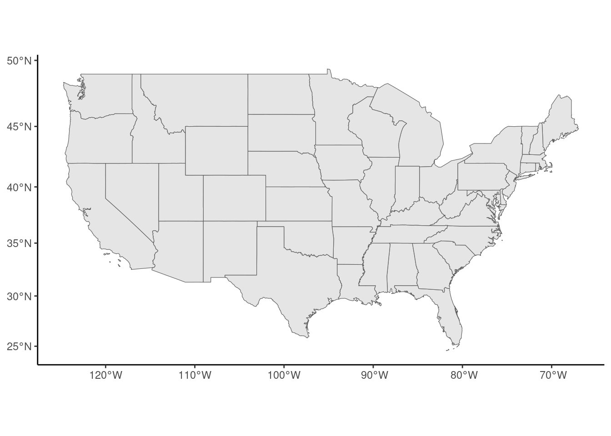
To get the border states of Texas, we use spatial indexation, i.e., we use the [ operator. The first argument is used to select rows; it is normally a vector of integers (the positions of the lines to extract), a vector of characters (the names of the lines to extract) or a logical vector. Here we can index an sf by another sf, and the result is (by default) a new sf containing the elements of the first one which has common points with the second one:
border_states <- states[filter(states, state == "Texas"), ]
border_statesSimple feature collection with 5 features and 1 field
Geometry type: GEOMETRY
Dimension: XY
Bounding box: xmin: -12140000 ymin: 2979000 xmax: -9918000 ymax: 4439000
Projected CRS: WGS 84 / Pseudo-Mercator
# A tibble: 5 × 2
state geometry
<chr> <GEOMETRY [m]>
1 Arkansas POLYGON ((-10407328 3897869, -10410758 3897882, -10443…
2 Louisiana MULTIPOLYGON (((-10253638 3470493, -10257225 3475979, …
3 New Mexico POLYGON ((-11868806 3763464, -11868752 3752373, -11870…
4 Oklahoma POLYGON ((-10942378 4046699, -10950200 4049735, -10956…
5 Texas MULTIPOLYGON (((-11360369 3475920, -11367496 3476824, …We then compute the Texas border. It is defined by the common points of the borders of Texas and its border states. This is obtained using the st_intersection function which returns four lines (one for each border state), and the border is then obtained by merging these four lines using the st_union function. The result is presented in Figure 9.4.
texas <- filter(border_states, state == "Texas") %>% st_geometry
border <- filter(border_states, state != "Texas") %>% st_geometry
border <- st_intersection(texas, border) %>% st_union
border_states %>% ggplot() +
geom_sf() +
geom_sf(data = border, linewidth = 1) +
geom_sf_label(aes(label = state)) 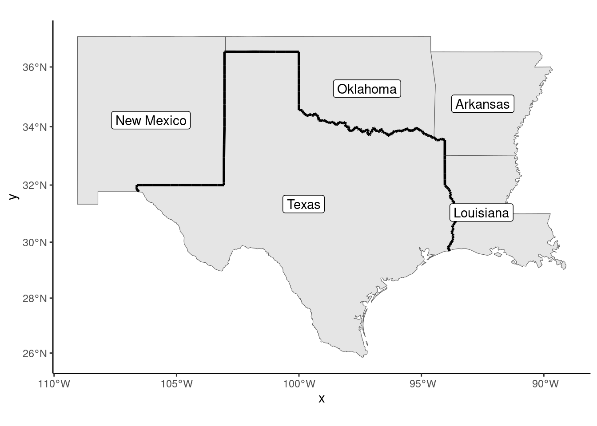
Note the use of geom_sf_label function which, is a specialized version of geom_label that is suitable for writing labels on a map. We then select the counties that belong to any of these states and we compute the distance to the Texas border. It is defined as the distance between the centroid of the county and the closest point of the border. The centroids are obtained using the st_centroid function. We’ve already used st_distance to comp ute the distance between two points. It can also be used to compute the (shortest) distance between a point and a line:
border_counties <- us_counties %>%
filter(state %in% pull(border_states, state))
centroids <- border_counties %>% st_geometry %>% st_centroid
dists <- st_distance(centroids, border)[, 1] %>% set_units(miles)
border_counties <- border_counties %>% add_column(dists)
head(dists)
## Units: [miles]
## [1] 194.7 157.4 259.2 212.0 241.6 130.3st_distance returns a matrix of distance, each column corresponding to a line of the second argument. As here there is only one line, we convert this matrix to a vector by taking its first column. The unit of the returned values is meters; we convert it to miles, like in the original article and we add this column to the sf. As in the original article, we fill with different colors in Figure 9.5 counties that are less than 25, 50, 75 and 100 miles from the border:
border_counties %>%
mutate(dist_class = cut(dists, c(0, 25, 50, 75, 100))) %>%
ggplot() +
geom_sf(aes(fill = dist_class)) +
scale_fill_grey(na.translate = FALSE) +
geom_sf(data = border)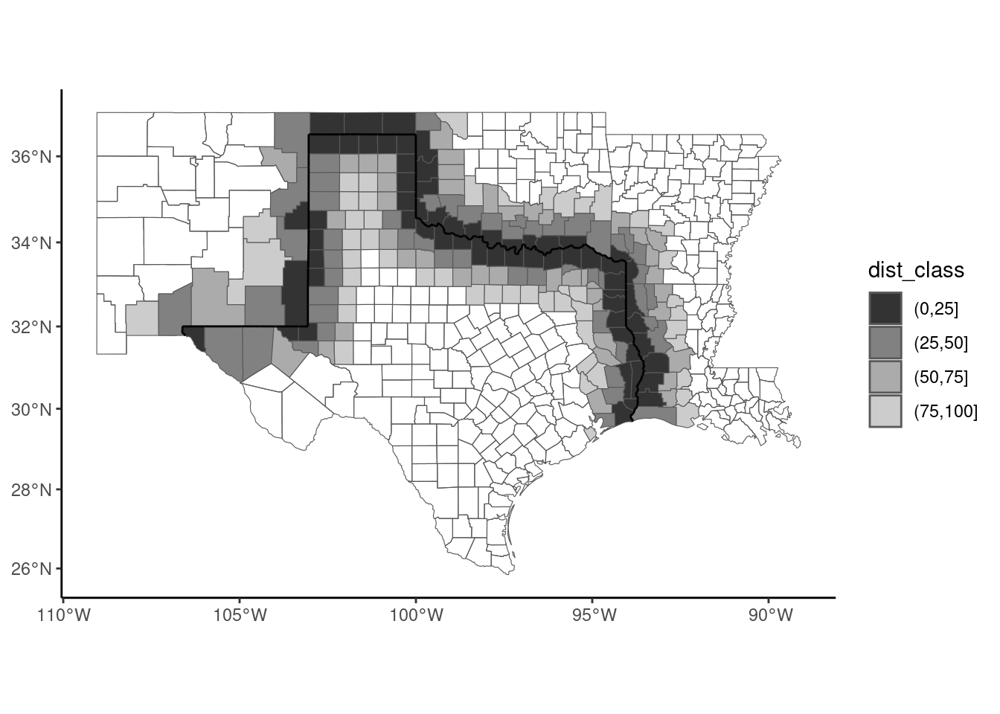
Finally, we select the relevant series from the data set of the paper, called mortgage_default, and we merge it with border_counties:
Note the use of the quite unusual dplyr::right_join function. By using right_join with border_counties as the first argument and mortgage_defaults as the second argument, we get an object of the class of the first argument (therefore a sf) and we get all the lines of the mortgage_defaults tibble and only those of us_counties that match. We use the convention that the distance is positive for Texan counties and negative for neighboring states. Finally, we plot the discontinuity in Figure 9.6.
mortdef_sf %>%
filter(abs(dists) < 50) %>%
mutate(state = ifelse(state == "Texas", "Texas", "other")) %>%
ggplot(aes(dists, default)) +
micsr::geom_binmeans(aes(size = after_stat(n)), shape = 21) +
geom_smooth(aes(linetype = state, weight = loans),
method = "lm", se = FALSE, color = "black")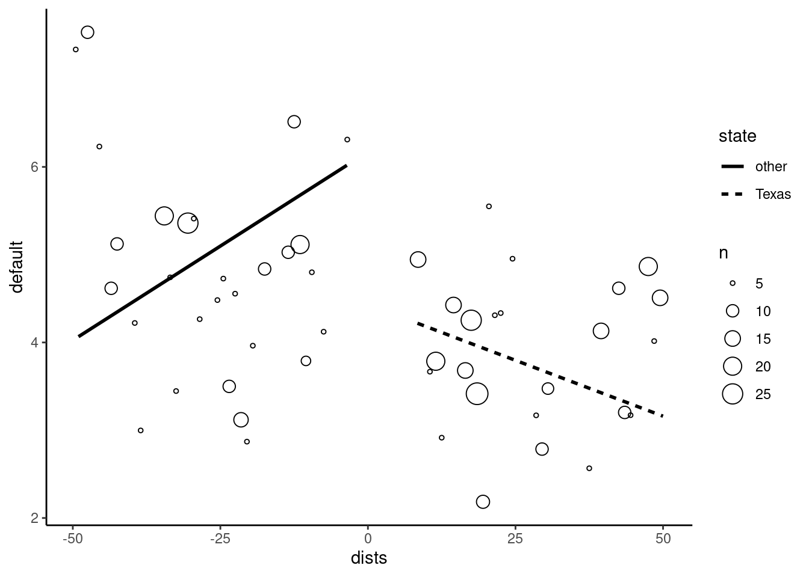
The intercept is a bit more than 7% outside the border and about 4.5% inside the border, so that the effect of the Texas specific regulation seems significant (a reduction of about 2.5% of the mortgage default rate).
9.2 Two examples
To illustrate the techniques presented in the subsequent sections, we’ll use two data sets. The first one, from Wheeler (2003), is called agglo_growth and deals with the topic of economies and diseconomies of agglomeration. The second one, called sp_growth is from Ertur and Koch (2007) and is used to fit an extension of Solow’s growth model.
Agglomeration economies and diseconomies
The agglo_growth contains data about US counties in 1990, identified by their fips code.
agglo_growth# A tibble: 3,106 × 14
fips emp_gr pop_gr emp pop college manuf unemp income
<chr> <dbl> <dbl> <dbl> <dbl> <dbl> <dbl> <dbl> <dbl>
1 01001 0.203 0.0591 12591. 32259. 0.121 0.248 0.0900 5774.
2 01003 0.367 0.224 29807. 78556. 0.121 0.206 0.0686 5960.
3 01005 0.177 0.0264 8642. 24756. 0.0923 0.344 0.0874 4544.
4 01007 0.224 0.0528 5377. 15723. 0.0490 0.424 0.158 4859.
5 01009 0.248 0.0737 13713. 36459. 0.0529 0.287 0.0892 5213.
# ℹ 3,101 more rows
# ℹ 5 more variables: educ_sh <dbl>, hw_sh <dbl>, pol_sh <dbl>,
# notwhite <dbl>, type <fct>emp_gr and pop_gr are the employment and the population growth in each county between 1980 and 1990 and emp and pop the level of employment and of the population in 1980. Wheeler (2003) investigates the existence of:
- agglomeration economies, which implies that the growth of a given territory will be positively correlated with its size,
- agglomeration diseconomies for large cities that experience congestion, crime, pollution, etc.
The hypothesis is therefore that the relation between size and growth should be inverted U shaped, which means that, for small territories, the agglomeration economies effect is dominant; as for large territories, the agglomeration diseconomies becomes dominant. We’ll reproduce some of the results using the counties of Louisiana. We first join the tibble to the sf called us_counties which contains the geometries of the counties that we’ve already used in the previous section:
We first plot a thematic map (Figure 9.7), with colors for counties related to the growth of the population (pop_gr). It is recommended to create first a categorical variable using base::cut, because it is easier to visualize a discrete palette of colors than a continuous one. We use scale_fill_brewer to use one of the palettes provided by the RColorBrewer package, which provides sequential, diverging and qualitative palettes. The first two are suitable to represent the values of numerical variables. Sequential palettes use a color, light for low values of the variable and dark for high values. Divergent palettes use two colors, with light colors for middle range values and dark colors for low and high values. All the available palettes can be displayed using RColorBrewer::display.brewer.all(). We use here the Oranges sequential palette.
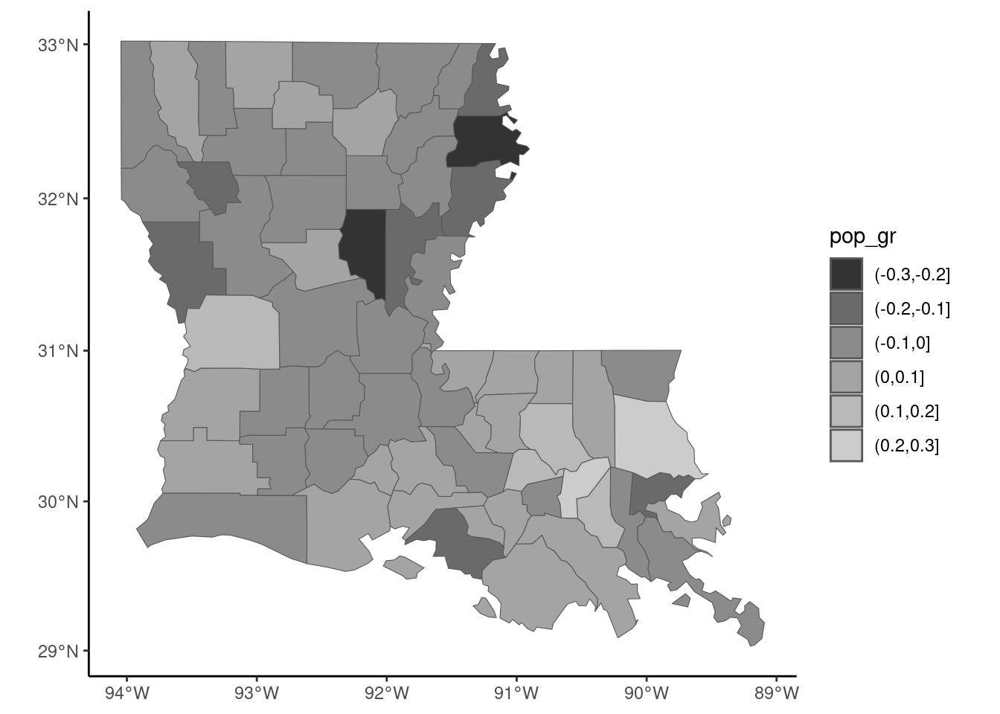
The inverted U shaped hypothesis between the log of the initial population and the growth rate can be tested by regressing the growth rate on the log population and its square. The later coefficient should then be negative.
Estimate Std. Error t value Pr(>|t|)
poly(log(pop), 2, raw = TRUE)1 0.68298 0.19333 3.53 0.00079
poly(log(pop), 2, raw = TRUE)2 -0.02974 0.00883 -3.37 0.00132The coefficient of the square term is negative and significant and we get a maximum growth for the fitted model for a value of log(pop) equal to \(-0.683 / (-0.0297 \times 2) = 11.4819\), i.e., a population of about 97 thousand inhabitants. This result is illustrated in Figure 9.8, a scatterplot representing the relationship between the logarithm of the initial population and its growth rate and a fitting line with a second degree polynomial:
Solow model
The second example is from Ertur and Koch (2007) who estimated a growth model for the countries of the world taking spatial correlation into account. The sp_solow data set is provided by the necountries package:
data("sp_solow", package = "necountries")
sp_solow# A tibble: 91 × 6
name code gdp60 gdp95 saving labgwth
<chr> <chr> <dbl> <dbl> <dbl> <dbl>
1 Angola AGO 5136. 2629. 0.0736 0.0233
2 Argentina ARG 18733. 24738. 0.178 0.0165
3 Australia AUS 26480. 45331. 0.247 0.0210
4 Austria AUT 15283. 45023. 0.261 0.00291
5 Burundi BDI 889. 1339. 0.0521 0.0168
# ℹ 86 more rowsThere are 91 countries in the sp_solow data set, the series being the gdp in 1960 and 1995, the saving rate (saving) and the growth of the labor force (labgwth). As in Section 3.1.2, we denote i as the saving rate and v as the sum of the growth rate of the labor force and 0.05.7 We also compute the annual growth rate (growth) as the difference of the logs of the GDP for 1995 and 1960 divided by 35.
We then need to join this data frame to a sf containing the administrative boundaries of the countries and the coordinate of their capital. Several packages enable to get an sf of the world. For example, the spData package has a world sf which is obtained from Natural Earth,8 geodata has a world function that enables to download from the gadm website9 an object of class SpatVector (than can be easily converted to a sf, as shown in Section 9.1.1). We use here the convenient necountries package that also uses Natural Earth and provides a countries function with different arguments to select a subset of countries of the world. By default, countries returns 199 lines, the 193 United Nations’ recognized countries, the two observer countries (Palestine and Vatican) and four not or not fully recognized countries (Kosovo, Somaliland, Northern Cyprus and Taiwan). Each line includes the geometry of the “main” part of the countries. Some countries have “parts” or “dependencies” that can be included using part = TRUE and dependency = TRUE. A “part” is an area which has the same political status as the rest of the country, but is far from the main part of the country. Examples of parts include Alaska and Hawaii for the United States, Martinique and Guadeloupe for France and Canaries for Spain. A “dependency” is an area with a specific political status. Examples of dependencies are Greenland for Denmark, New Caledonia for France and Gibraltar for the United Kingdom.
sp_solow has columns that contain the names and the iso-codes of the countries (respectively name and code). Any of them can be used to join sp_solow with the countries’ object, but it is much safer to use code, as it avoids the problem of small differences in countries’ names. A lot of countries of the world are not present in sp_solow (especially most of the communist countries). We check whether all the countries of sp_solow are present in the countries object, with the check_join function; the by argument indicates the series in sp_solow that identifies the country:
library(necountries)
countries() %>% check_join(sp_solow, by = "code")
##
## Countries in the external tibble not in the countries' sf:
## HKG, ZARThe two problems are that the D.R. of Congo (iso3 code COD) used to be called Zaire (iso3 code ZAR) and that Hong Kong, which is a part of China for the necountries package, was considered as a sovereign country in Ertur and Koch (2007) study. We then correct the code for the D.R. of Congo, we add Hong Kong using the include argument and we remove Antarctica with the exclude argument:
sp_solow <- sp_solow %>%
mutate(code = ifelse(code == "ZAR", "COD", code))
sps <- countries(include = "Hong Kong", exclude = "Antarctica") %>%
select(iso3, country, point) %>%
left_join(sp_solow, by = "code") %>% select(- name)
spsSimple feature collection with 200 features and 8 fields
Active geometry column: polygon
Geometry type: GEOMETRY
Dimension: XY
Bounding box: xmin: -180 ymin: -55.67 xmax: 180 ymax: 83.12
Geodetic CRS: WGS 84
# A tibble: 200 × 10
iso3 country point polygon
<chr> <chr> <POINT [°]> <GEOMETRY [°]>
1 AFG Afghani… (69.18 34.52) POLYGON ((74.54 37.02, 74.37 37.15,…
2 ALB Albania (19.82 41.33) POLYGON ((20.57 41.87, 20.6 41.95, …
3 DZA Algeria (3.049 36.77) POLYGON ((-4.822 25, -4.166 24.57, …
4 AND Andorra (1.527 42.51) POLYGON ((1.707 42.5, 1.722 42.61, …
5 AGO Angola (13.23 -8.836) MULTIPOLYGON (((13.07 -4.635, 12.9 …
# ℹ 195 more rows
# ℹ 6 more variables: gdp60 <dbl>, gdp95 <dbl>, i <dbl>,
# labgwth <dbl>, v <dbl>, growth <dbl>Note that the resulting sf has two geometry columns, polygons for the borders of the countries (polygon) and points for the capitals (point). Note also that the active geometry column is polygon. We then draw in Figure 9.9 a world map with the color of the countries related to the annual growth during the 1960-95 period and a point with a size related to the initial (1960) GDP. necountries provides a plot method which draws a basic map using ggplot2. A basic thematic map can be drawn using the fill argument to fill the areas of the countries and the centroid or the capital arguments to draw a point at the position of the centroid or the capital of each country. Any ggplot2 functions can be used to customize the graphic:
sps %>% plot(fill = "growth", centroid = "gdp60", palette = "Blues") +
scale_size_continuous(range = c(0.5, 3)) +
theme(legend.position = "bottom") +
guides(size = guide_legend(nrow = 3, reverse = TRUE),
fill = guide_legend(nrow = 3, byrow = TRUE)) +
labs(fill = "Growth rate (1960-95)", size = "GDP in 1960")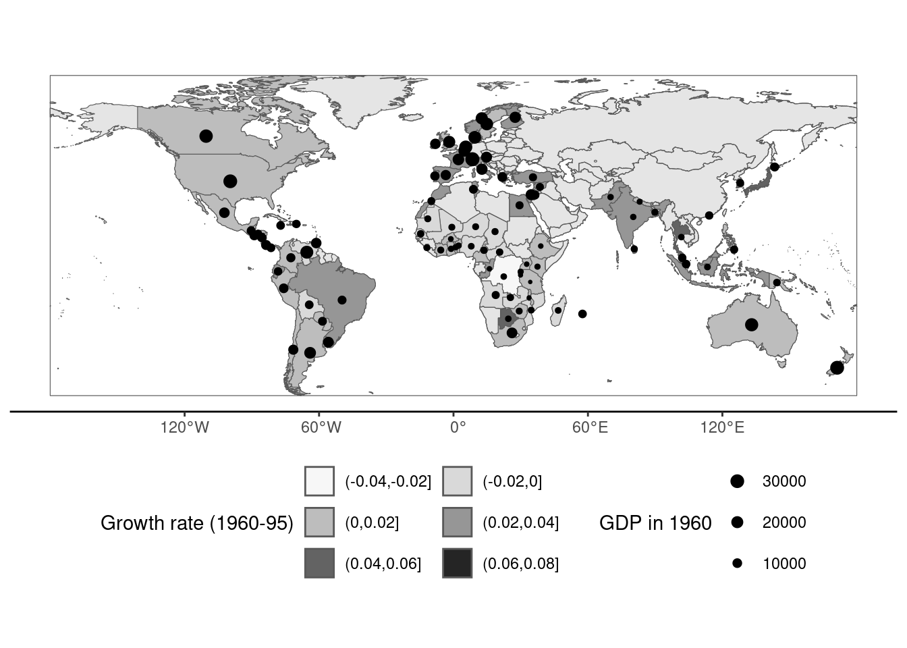
The basic Solow model, which was given in Equation 3.3, is then estimated:
Estimate Std. Error t value Pr(>|t|)
log(i) 1.276 0.125 10.19 <2e-16
log(v) -2.709 0.642 -4.22 6e-05Remember that the structural model implies that \(\beta_s = - \beta_v = \kappa / (1 - \kappa)\). This hypothesis can be tested using a reparametrization of the model:
for which the hypothesis is that the coefficient of log(v) equals 0. This hypothesis is rejected at the 5% level (but not at the 1% level). Imposing this hypothesis, we get:
which implies a value of \(\kappa\) (the share of the capital in the GDP) equal to \(\hat{\beta}_i / (1 + \hat{\beta}_i) = 0.58\) which is implausibly high.
9.3 Spatial correlation
Spatial correlation occurs when one can define a distance relationship between observations. The notion of distance is broad, but we’ll consider in this section only geographical distance. For each observation, one can in this case define a set of neighbors. If the geographical representation of an observation is a polygon (which is the relevant choice for countries or regions), two observations for example can be said to be neighbors if they have a common border. If the geographical representation of an observation is a point (for example for a city), two observations are neighbors if the distance between them is less than, say, 100 kilometers. Once the set of neighbors have been defined for every observations, weights can be computed. The weights can be equal or may depend on the distance between the observation and its neighbors. These two operations of defining the set of neighbors and their weights are performed by the spdep package (Pebesma and Bivand 2023).
Contiguity and weights
To get the matrix of contiguity for the counties of Louisiana, we use the spdep::poly2nb function:
Neighbour list object:
Number of regions: 64
Number of nonzero links: 322
Percentage nonzero weights: 7.861
Average number of links: 5.031 The print method indicates the number of contiguity links (322). Instead of storing these links in a full matrix (with 1 for contiguous counties and 0 otherwise) which would have \(64^2 = 4096\) cells with only 322 of them with a value of 1 (about 7.9%), an nb object is returned. It is a list of 64 vectors which contains, for each observation, the positions of its neighbors. For example:
The first two counties have five neighbors and the third one has six. A summary method provides more details. poly2nb has a queen argument which is TRUE by default. Queen contiguity means that two polygons which have only one common point are neighbors. Setting queen to FALSE implies that rook continuity is used. In this case, only counties that have a common border are neighbors.
nb_louis_rook <- poly2nb(louisiana, queen = FALSE)Printing nb_nc_rook, one can check that the number of contiguity links (318) is slightly lower than previously (322). nb objects can’t be plotted as is with ggplot2. We provide a convenient st_nb function which performs this task, as it returns a sf object (see Figure 9.10):
louisiana %>%
ggplot() +
geom_sf(fill = NA) +
geom_sf(data = st_nb(louisiana), linetype = "dotted") +
geom_sf(data = st_nb(louisiana, queen = FALSE))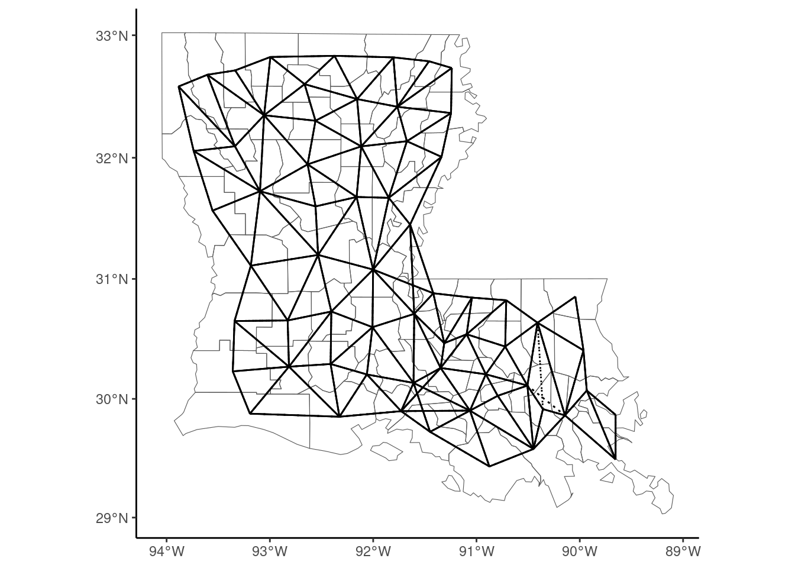
We first plot queen contiguity links with dotted lines and then rook contiguity with plain lines, so that the specific queen contiguity links appear as dotted segments. A matrix of weights is obtained by using the nb2listw function:
W_louis <- nb_louis %>% nb2listwA listw object is returned, which contains two lists: the first (neighbours) is the same as the one of the nb object. The second contains weights:
[[1]]
[1] 0.2 0.2 0.2 0.2 0.2
[[2]]
[1] 0.2 0.2 0.2 0.2 0.2
[[3]]
[1] 0.1667 0.1667 0.1667 0.1667 0.1667 0.1667We can see that weights of neighbors for a given observation are all equal (1/5 for the first two observations which have five neighbors and \(1/6\) for the third one which has six neighbors) and sum to one. Therefore, premultiplying a vector \((y - \bar{y})\) by \(W\) results in a vector with typical value \(\sum_m w_{nm} y_m - \bar{y} = \tilde{y}_n - \bar{y}\). nb and a listw objects can be coerced to matrices using the nb2mat and listw2mat functions.
W_louis %>% listw2matInstead of defining the neighborhood as common borders, one can consider distance between points, for example the capitals or the centroids of the countries using the sp_solow data set. Remember that sps contains two sf, polygon and point and that the active geometry is polygon. We first specify point as being the active geometry, using the st_set_geometry function, and we remove all countries for which the data are not available:
sp_solow2 <- sps %>% na.omit %>% st_set_geometry("point")Then, we use the dnearneigh function to compute the set of neighbors for each country: the first argument is the sf and the next two arguments, called d1 and d2 are mandatory and should be set to the minimum and the maximum distances that should be used to define the neighbors. Note that this distance should be indicated in kilometers if the CRS is geographical, which is the case here.
d <- dnearneigh(sp_solow2, 0, 1000)
dNeighbour list object:
Number of regions: 91
Number of nonzero links: 238
Percentage nonzero weights: 2.874
Average number of links: 2.615
18 regions with no links:
3 8 10 17 27 41 44 49 50 55 62 63 64 65 72 74 79 91
29 disjoint connected subgraphsWith a distance of 1000 km, there are 238 links and an average of 2.62 neighbors per country. Note that 18 countries have no neighbors. We then compute the weights, using nb2listwdist. The first two argument are a nb and a sf objects. The type argument indicates how the weights should be computed. Denoting \(d_{nm}\) the distance between the two unit \(n\) and \(m\), with type = "idw", we get \(w_{nm} = d_{nm} ^ {- \alpha}\). With type = "exp", the weights are \(w_{nm} = \mbox{exp}(- \alpha d_{nm})\). The alpha argument controls the value of \(\alpha\) which is 1 by default. For example, if type = "idw" and alpha = 2, the weights are the inverse of the square of the distance. Once the weights have been computed, they can be normalized in different ways, using the style argument. If type = "raw" (the default), no normalization is performed. A usual choice is "W" where the weights of a unit are normalized so that they sum to 1:
w <- nb2listwdist(d, sp_solow2, type = "idw", alpha = 1,
style = "W", zero.policy = TRUE)Note the use of zero.policy: if TRUE, the matrix of weights is computed even if, as it is the case here, some countries have no neighbors.
Tests for spatial correlation
The spatial correlation hypothesis can be tested either for a specific variable or using the residuals of a linear regression. Two main tests have been proposed. The first is Moran’s \(I\) test: denoting \(W\) as the weights matrix where the weights sum to one for a given line, the statistic is defined as:
\[ I = \frac{(y - \bar{y})^\top W (y - \bar{y})}{(y - \bar{y})^\top (y - \bar{y})} = \frac{\sum_n (y_n - \bar{y})(\tilde{y}_n - \bar{y})}{\sum_n (y_n - \bar{y})^2} \]
which is simply the ratio of the covariance between \(y\) and \(\tilde{y}\) and the variance of \(y\). It therefore can be obtained as the coefficient of \(y\) in a linear regression of \(\tilde{y}\) on \(y\). If the variance of \(\tilde{y}\) and \(y\) were equal, it would also be the coefficient of correlation between the value of \(y\) for a unit and its neighbors. The Moran test is computed using the spdep::moran.test function which takes as argument a series and a listw object:
moran.test(louisiana$pop_gr, W_louis) %>% gaze
## Moran I = 0.306 (-0.016, 0.078), z = 4.147, pval = 0.000The value of the statistic is \(0.306\). Under the hypothesis of no correlation, the expected value of this statistic is \(- 1 / (N-1) = -0.016\) and the standard deviation is \(0.078\).10 The standardized statistic (\(4.147\)) is asymptotically normal and the hypothesis of no spatial correlation is rejected. An alternative to Moran’s \(I\) test is Geary’s \(C\) test, which is defined as:
\[ C = \frac{N - 1}{2N}\frac{\sum_n \sum_m w_{nm} (y_n - y_m) ^ 2}{\sum_n (y_n - \bar{y})^ 2} \]
Introducing deviations from the mean in the previous expression and developing, we get:
\[ C = \frac{1}{2}\frac{N - 1}{N} \left(1 - 2 I + \frac{\sum_n (y_m- \bar{y}) ^ 2 \sum_m w_{mn}}{\sum_n (y_n - \bar{y}) ^ 2}\right) \]
If the weight matrix were symmetric, as \(\sum_n w_{nm} = 1\), we also would have \(\sum_m w_{mn} = 1\), so that the last term is one and \(C = \frac{N - 1}{N}(1 - I)\). Therefore, we can expect \(C\) to be close to \((1 - I)\). Geary’s test is implemented in the spdep::geary.test function
geary.test(louisiana$pop_gr, W_louis) %>% gaze
## Geary C = 0.681 (1.000, 0.083), z = 3.824, pval = 0.000These tests are unconditional tests of spatial correlation. The same tests can be performed on the residuals of linear models.
model_louisiana <- lm(pop_gr~poly(log(pop),2,raw =TRUE), louisiana)
lm.morantest(model_louisiana, W_louis) %>% gaze
## Moran I = 0.136 (-0.020, 0.077), z = 2.026, pval = 0.021The hypothesis of no spatial correlation is still rejected at the 5% level, but the p-value is much higher than the one associated with the unconditional test.
Ertur and Koch (2007) computed the Moran test for the residuals of the OLS estimation of the standard Solow’s growth model. The set of neighbors is obtained with setting an infinite maximum distance, so that all countries are neighbors to each other. Two matrices of weights are computed: one with \(w_{nm} = d_{nm}^{-2}\) (W1) and the other with \(w_{nm} = \mbox{exp}(-2 d_{nm})\) (W2):
lm_solow <- lm(log(gdp95) ~ log(i) + log(v), sp_solow2)
d <- dnearneigh(sp_solow2, 0, Inf)
W1 <- nb2listwdist(d, sp_solow2, type = "idw", alpha = 2,
style = "W", zero.policy = TRUE)
W2 <- nb2listwdist(d, sp_solow2, type = "exp", alpha = 2,
style = "W", zero.policy = TRUE)
lm.morantest(lm_solow, W1) %>% gaze
## Moran I = 0.431 (-0.020, 0.065), z = 6.927, pval = 0.000
lm.morantest(lm_solow, W2) %>% gaze
## Moran I = 0.560 (-0.022, 0.125), z = 4.675, pval = 0.000Whatever the weighting matrix, the hypothesis of no spatial correlation is rejected.
Local spatial correlation
A first glance of local spatial correlation can be obtained using Moran’s plot (see Figure 9.11), implemented in the spdep::moran.plot function, where \(y_n - \bar{y}\) is on the \(x\) axis and \(\tilde{y}_n - \bar{y}\) on the \(y\) axis. Therefore, both variables have zero mean and the intercept of the fitting line is therefore 0, the slope being Moran’s \(I\) statistic:
moran.plot(louisiana$pop_gr, W_louis)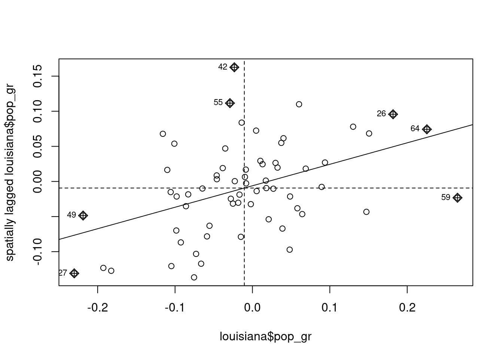
Each observation is situated in one of the four quarters of the plane. Observations in the upper-right quarter are “high-high” observations, which means that the value of \(y\) for observation \(n\) and its neighbors are higher than the sample mean. Similarly, the lower-left quarter contains “low-low” observations, i.e., observations for which own values of \(y\) and values of its neighbors are lower than the sample mean. The upper-left and the lower-right quarters contain respectively the “low-high” and the “high-low” observations. In case of no spatial correlation, the points should be randomly disposed around the origin and the slope of the regression line should be 0. On the contrary, in case of positive spatial correlation, a majority of points should be of the “low-low” or “high-high” category and the regression line should have a positive slope.
Anselin (1995) proposed local versions of Moran’s \(I\) and Geary’s \(C\) statistics. We then have for each observation \(I_n\) and \(G_n\) so that \(\sum_n I_n\) and \(\sum_n G_n\) are respectively proportional to the global Moran and Geary statistics. Local Moran’s statistics are defined as:
\[ I_n = (y_n - \bar{y}) \sum_m w_{nm} (y_m - \bar{y}) = (y_n - \bar{y})(\tilde{y}_n - \bar{y}) \]
and their sum is \((y_n - \bar{y})(\tilde{y}_n - \bar{y})\), which is the numerator of Moran’s \(I\) statistic. Therefore, we have:
\[ I = \frac{\sum_n I_n}{\sum_n (y_n - \bar{y}) ^ 2} \]
Local Moran’s statistics are obtained using the spdep::localmoran function:
locmor <- localmoran(louisiana$pop_gr, W_louis)which returns a matrix, with a line for every observation and column containing the local Moran values, their expectation, variance, the standardized statistic and the p-value. It’s easier to coerce this matrix to a tibble in order to extract extreme values of the statistic:11
# A tibble: 11 × 5
Ii E.Ii Var.Ii Z.Ii pval
<localmrn> <localmrn> <localmrn> <localmrn> <localmrn>
1 1.17852 -1.603e-02 0.154640 3.038 0.002384
2 0.93029 -7.606e-03 0.090380 3.120 0.001810
3 -0.03674 -2.119e-05 0.000175 -2.776 0.005510
4 2.31977 -6.666e-02 0.744962 2.765 0.005694
5 3.00564 -8.712e-02 1.210852 2.811 0.004945
# ℹ 6 more rowsThere are therefore 11 out of 64 (17%) observations for which the p-value is lower than 1%, which confirms the presence of spatial correlation. The local Moran statistic can also be represented in a map (Figure 9.12), in order to identify the “hot spots”:12
z_locmor <- locmor %>% as_tibble %>% pull(Ii) %>% as.numeric
z_locmor <- z_locmor %>%
cut(c(-1, - 0.5, 0, 0.5, 1, 1.5, 2, 2.5, Inf))
louisiana %>% add_column(z = z_locmor) %>%
mutate(z = fct_rev(z)) %>%
ggplot + geom_sf(aes(fill = z)) +
scale_fill_grey()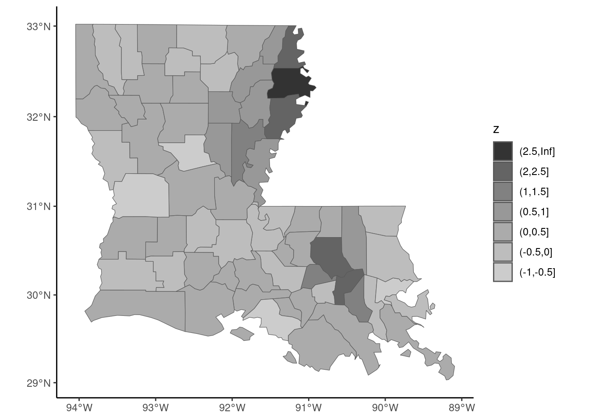
Two hot spots are then identified, in the north-west and the south-west of the state.
9.4 Spatial econometrics
Spatial models and tests
We consider here linear gaussian models that are extended in order to integrate the spatial features of the sample, using the weighting matrix described in the previous section. Two main models can be considered. The first one is the spatial error model (SEM) which can be written in matrix form as:
\[ y = \alpha \iota + X \beta + \epsilon \; \mbox{with} \; \epsilon = \rho_\epsilon W \epsilon + \nu \tag{9.1}\]
Therefore, the error for observation \(n\) is linearly related to the errors of its neighbors \(\tilde{\epsilon}_n\). OLS estimation gives unbiased and consistent estimators but, as always with non-spherical errors, it is inefficient and the estimated covariance matrix of the coefficients based on the simple formula (\(\sigma ^ 2 (\tilde{X}^\top \tilde{X}) ^ {-1}\)) is biased.
The second model is called the spatial autoregressive model (SAR).13. It extends the basic gaussian linear model by adding as a regressor the mean value of the response for the neighbor units. For one observation, the model writes \(y_n =\alpha + \beta ^ \top x_n + \rho_y \tilde{y}_n + \epsilon_n\) or, in matrix form:
\[ y = \alpha j + X \beta + \rho_y W y + \epsilon = Z \gamma + \rho_y W y + \epsilon \] The reduced form of the model is:
\[ y = (I - \rho_y W) ^ {-1} Z \gamma + (I - \rho_y W) ^ {-1}\epsilon \tag{9.2}\]
Therefore, the values of \(y\) depend on all the values of \(\epsilon\), and \(\tilde{y}_{n}\) is therefore correlated with \(\epsilon_n\). The OLS estimator is therefore biased and inconsistent. Moreover, in Equation 9.2, the spatial dependence in the parameter \(\rho_y\) feeds back (R. Bivand, Millo, and Piras 2021, 6), which is not the case for Equation 9.1. This means that for the SEM model, the marginal effect of a covariate is the corresponding coefficient, but this is not the case for the SAR model. Moreover, the matrix \((I - \rho_y W) ^ {-1}\) can be written as an infinite series:
\[ (I - \rho_y W) ^ {-1} = I + \rho_y W + \rho_y^2 W^2 + \rho_y^3 W^3 + \ldots \] Consider the case of three observations, France (1), Italy (2) and Spain (3). The matrix of contiguity is:
\[ W = \left(\begin{array}{rcl} 0 & 0.5 & 0.5 \\ 1 & 0 & 0 \\ 1 & 0 & 0\end{array}\right) \] France has two neighbors (Italy and Spain) and Italy and Spain only one (France). The weights are such that they sum to 1 for each line. Consider a variation of the unique covariate in Spain (\(\Delta x_3\)) and denote \(\beta\) the corresponding coefficient. The direct effect on the response for the three countries is obviously \(\Delta y_0 ^ \top = (0, 0, \beta \Delta x_3)\). This increase of \(y\) in Spain implies an increase of \(y\) in the neighboring country, France. Therefore, \(\Delta y_1 ^ \top = (0.5 \rho_y \beta \Delta x_3, 0, 0)\). This increase of \(y\) in France implies an increase of \(y\) in the neighboring countries, Italy and Spain: \(\Delta y_2 ^ \top = (0, 0.5 \rho_y ^ 2 \beta \Delta x_3, 0.5 \rho_y ^ 2 \beta \Delta x_3)\). This increase of \(y\) in Italy and Spain implies an increase of \(y\) in the neighboring country of Italy and Spain, which is France: \(\Delta y_3 ^ \top = (0.5\rho_y ^ 3 \beta \Delta x_3, 0, 0)\), etc. To take a numerical example, consider \(\beta \Delta x_3 = 1\) and \(\rho_y = 0.3\). Then, \(\Delta y_0 ^ \top = (0, 0, 1)\), \(\Delta y_1 ^ \top = (0.15, 0, 0)\), \(\Delta y_2 ^ \top = (0, 0.045, 0.045)\) and \(\Delta y_3 ^ \top = (0.0135, 0, 0)\). In total, we have \(\sum_{i = 0} ^ 3 \Delta y_i ^ \top = (0.177, 0.045, 1.045)\). These four effects and their sum is computed below:
W <- matrix(c(0, 1, 1, 0.5, 0, 0, 0.5, 0, 0), nrow = 3)
bdx <- c(0, 0, 1)
rho <- 0.3
dy0 <- diag(3) %*% bdx
dy1 <- rho * W %*% bdx
dy2 <- rho ^ 2 * W %*% W %*% bdx
dy3 <- rho ^ 3 * W %*% W %*% W %*% bdx
dy_03 <- cbind(dy0, dy1, dy2, dy3)
dy_03 [,1] [,2] [,3] [,4]
[1,] 0 0.15 0.000 0.0135
[2,] 0 0.00 0.045 0.0000
[3,] 1 0.00 0.045 0.0000apply(dy_03, 1, sum)[1] 0.1635 0.0450 1.0450The total effect of \(\Delta x_3\) is obtained using the formula: \(\Delta y = (I - \rho_y W) ^ {-1} \Delta x\):
which is very close to the sum of the direct effect and the first three indirect effects computed previously.
Spatial models are usually estimated by maximum likelihood, by assuming a multivariate normal distribution for the iid errors. For the SEM model, the idiosyncratic errors can be written as a function of the response:
\[ \nu = (I - \rho_\epsilon W) y - (I - \rho_\epsilon W) Z\gamma \tag{9.3}\]
so that the Jacobian of the transformation is
\[\left| \frac{\partial \nu}{\partial y} \right| = \left| I - \rho_\epsilon W \right|\].
the likelihood is similar to the one of the linear gaussian model except that an extra term, which is the log of the Jacobian, should be added:
\[ -N/2 (\ln 2\pi + \ln \sigma ^ 2) + \ln \left| I - \rho_\epsilon W \right| - \frac{1}{\sigma ^ 2} \nu^\top \nu \] where \(\nu\) is given by Equation 9.3. For the SAR model, Equation 9.2 indicates that the Jacobian is the same, so that the log-likelihood is:
\[ -N/2 (\ln 2\pi + \ln \sigma ^ 2) + \ln \left| I - \rho_y W \right| - \frac{1}{\sigma ^ 2} \epsilon^\top \epsilon ^ 2 \]
with \(\epsilon = y - Z \gamma - \rho_y Wy\).
These two models can be augmented by spatial lags of the covariates, they are in this case called Durbin’s models. There is an inserting relationship between Durbin’s SAR model and the SEM model. The former can be written:
\[ y = \rho_y W y + Z\gamma + W Z\theta + \epsilon \]
with \(\epsilon\) iid errors. The common factor hypothesis is that \(\theta = - \rho_y \gamma\). In this case, we have:
\[ (I - \rho_y W) y = (I - \rho_y W) Z\gamma + \epsilon \] Or finally:
\[ y = Z\gamma + (I - \rho_y W) ^{-1} \epsilon \] which is the SEM model, as denoting \(\eta = (I -\rho_y W) ^ {-1} \epsilon\) the errors of this model, we have \(y = Z\gamma + \eta\), with \(\eta = \rho_y W \eta + \epsilon\).
Once it has been established that there is some spatial dependence, one has to choose the “right” specification. Several tests have been proposed, based on the three test principles. Lagrange multiplier tests proposed by Anselin et al. (1996) are popular, as they only require the OLS estimation. Different flavors of tests have been proposed, testing \(\rho_y = 0\), \(\rho_\epsilon = 0\) or \(\rho_y = \rho_\epsilon = 0\). The basic version of, for example the first test (\(\mbox{H}_{0}: \rho_y = 0\)) has, as a maintained hypothesis that \(\rho_\epsilon = 0\). A robust version of the test has been proposed which doesn’t impose this maintained hypothesis. The common factor hypothesis can easily be tested using a likelihood ratio test. The Wald statistic is less easy to compute, as a set of non-linear hypotheses \(\theta = - \rho_y \beta\) should be tested.
Application to the growth model
To overcome the irrelevant empirical results of the standard Solow model, Ertur and Koch (2007) consider an endogenous growth model with spillovers. The production function is as usual a Cobb-Douglas:
\[ Y_n(t) = A_n(t) K_n ^ \kappa(t) L_n ^ {1 -\kappa}(t) \] \(\kappa\) being the elasticity of the production with the capital and also the share of the profits in the national product. The level of technology is given by:
\[ A_n(t) = \Omega(0) e ^ {\mu t} k_n ^ \phi(t) \prod_{m \neq n} ^ N A_n^{\gamma w_{nm}}(t) \]
where \(k_n(t) = K_n(t) / L_n(t)\) is the physical capital per worker, \(\Omega(0)\) is the initial level of the technology and \(\mu\) is a constant rate of technological growth, as in the Solow model. The next term takes into account the spillover effect of domestic investment, following Romer (1986), and the strength of this spillover effect is measured by \(\phi\). The last term is specific to the model of Ertur and Koch (2007), for which the spillovers are not restricted to domestic investment, but concerns also the technology of neighboring countries. The effect of the technology of country \(m\) on the technology of country \(n\) is the product of a constant parameter \(\gamma\) and a specific weight, \(w_{nm}\), which is a decreasing function of the distance between both countries. Ertur and Koch (2007) showed (equation 10, page 1038) that, at the steady state, the output per capita is:
\[ \begin{array}{rcl} \ln y_n ^ * &=& \frac{1}{1 - \kappa - \phi} \ln \Omega + \frac{\kappa + \phi}{1 - \kappa - \phi} \ln i_n - \frac{\kappa + \phi}{1 - \kappa - \phi} \ln v_n \\ &-& \frac{\gamma\kappa}{1 - \kappa - \phi} \sum_{m\neq n}^ N w_{nm} \ln i_m + \frac{\gamma\kappa}{1 - \kappa - \phi} \sum_{m\neq n}^ N w_{nm} \ln v_n \\ &+& \frac{\gamma(1 - \kappa)}{1 - \kappa - \phi} \sum_{m\neq n}^ N w_{nm} \ln y_m ^ * \end{array} \]
In matrix form, denoting \(y = \ln y^*\), \(X = (\ln i \ln v)\), \(\beta = \left(\begin{array}{c} (\kappa + \phi) / (1 - \kappa - \phi)\\ - (\kappa + \phi) / (1 - \kappa - \phi)\end{array}\right)\), \(\theta = \left(\begin{array}{c} \gamma \kappa / (1 - \kappa - \phi)\\ - \gamma \kappa / (1 - \kappa - \phi)\end{array}\right)\) and \(\rho_y = \gamma (1 - \kappa) / (1 - \kappa - \phi)\), the model can be written as:
\[ y = \alpha i + X \beta + WX \theta + \rho_y Wy + \epsilon \] if \(\gamma = 0\), the model reduces to the model of Romer (1986) and the last two terms disappear. Note that in this case \(\kappa\) and \(\phi\) are not identified, but only their sum. Moreover, if \(\phi\) is also 0, we get the Solow model. Whether \(\phi\) equals zero or not, the resulting model is a standard linear model already estimated in Section 9.2.2:
Moreover, imposing the theoretical constraint of the growth model, we must have the sum of the two coefficients of log(i) and log(v) equal to 0. Therefore, the constrained model can be estimated using the difference of the logarithms of the two covariates as the unique regressor. For convenience, we call the ratio of the two covariates i and we store it in a new data frame called sp_solow3. The constrained OLS model can then be estimated:
The hypothesis of \(\gamma = 0\) can be tested using Lagrange multipliers tests, testing either the alternative that there is a spatial lag or correlated errors. spdep::lm.LMtests provides different flavors of these tests. Its two main arguments are a lm model and a matrix of spatial weights. The test argument can be either "LMerr" and “LMlag” for the standard tests of uncorrelated errors and absence of spatial lag, "RLMerr" and "RLMlag" for the robust versions of these two tests and "SARMA", suitable when the alternative hypothesis is the presence of both correlation of the errors and a spatial lag. test = "all" enables to perform the five tests:
lm.LMtests(ols_solow, W1, test = "all") %>% gaze
## RSerr : 39.874, df = 1, p-value = 0.000
## RSlag : 51.467, df = 1, p-value = 0.000
## adjRSerr: 3.004, df = 1, p-value = 0.083
## adjRSlag: 14.596, df = 1, p-value = 0.000
## SARMA : 54.471, df = 2, p-value = 0.000All the tests reject the hypothesis of uncorrelated errors or/and spatial lag, except the robust test of uncorrelated errors. Therefore, these tests seem to indicate that the correct model is a spatial lag model. We then estimate the three spatial models using the spatialreg package (Pebesma and Bivand 2023) which provides three functions: lagsarlm for SAR models, sacsarlm for SEM model and errorsarlm for SAR-SEM models. The three first arguments are formula, data and listw, which should be a listw object containing the weights. The Durbin argument enables to estimate Durbin’s versions of the model; this can be done either by setting it to TRUE (a spatial lag is then added for all the covariates) or a formula indicating the subset of covariates for which spatial lags have to be added. We estimate also, as for the OLS estimator, the variant of the model that imposes the theoretical restrictions on the coefficients. The results are presented in Table 9.1.
library(spatialreg)
m1 <- lagsarlm(log(gdp95) ~ log(i) + log(v),
sp_solow2, W1, Durbin = TRUE)
m2 <- errorsarlm(log(gdp95) ~ log(i) + log(v),
sp_solow2, W1, Durbin = FALSE)
m3 <- sacsarlm(log(gdp95) ~ log(i) + log(v),
sp_solow2, W1, Durbin = TRUE)
m1c <- update(m1, . ~ . - log(v), data = sp_solow3)
m2c <- update(m2, . ~ . - log(v), data = sp_solow3)
m3c <- update(m3, . ~ . - log(v), data = sp_solow3)We can first test the theoretical restrictions using either a likelihood ratio or a Wald test:
library(lmtest)
library(car)
linearHypothesis(ols_solow, "log(i) + log(v) = 0",
test = "Chisq") %>% gaze
## Chisq = 4.427, df: 1, pval = 0.035
lrtest(ols_solow, ols_solowc) %>% gaze
## Chisq = 4.467, df: 1, pval = 0.035
linearHypothesis(m1, c("log(i) + log(v) = 0",
"lag.log(i) + lag.log(v) = 0")) %>% gaze
## Chisq = 2.382, df: 2, pval = 0.304
lrtest(m1, m1c) %>% gaze
## Chisq = 2.377, df: 2, pval = 0.305As seen previously, the theoretical restrictions are rejected at the 5% level using a Wald test for the Solow model. This is not the case for the spatial lag model. Note also that the Wald and the likelihood ratio tests give very similar results. An interesting feature of the model of Ertur and Koch (2007) is that their specification enables the identification of all the structural parameters of the model, \(\kappa\), \(\phi\) and \(\gamma\). If \(\phi = 0\), \(\theta = \gamma \beta\) and \(\rho_y = \gamma\), so that: \(y = \alpha j+ (I - \gamma W)X\beta + \gamma y + \epsilon\), the reduced form of the model is, in matrix form:
\[ y = \alpha j + X \beta + (I - \gamma W) ^ {-1} \epsilon \] which is a SEM model without Durbin terms. Therefore, the hypothesis that \(\phi = 0\) is in the context of this model the hypothesis of common factors and can easily be tested using a likelihood ratio test:
The hypothesis of common factor is rejected at the 1% level. Our preferred specification is therefore a spatial lag model imposing the theoretical restrictions. The structural parameters of the model (\(s\)) can be computed using the fitted reduced form parameters (\(r\)). The relation between \(r\) and \(s\) is:
| OLS | SAR | SEM | SARMA | OLSc | SARc | SEMc | |
|---|---|---|---|---|---|---|---|
| $\ln i$ | 1.276 | 0.837 | 0.843 | 0.876 | 1.379 | 0.863 | 0.863 |
| (0.125) | (0.099) | (0.099) | (0.102) | (0.117) | (0.099) | (0.099) | |
| $\ln v$ | −2.709 | −1.636 | −1.848 | −1.737 | |||
| (0.642) | (0.555) | (0.550) | (0.562) | ||||
| $W \ln i$ | −0.338 | −0.325 | −0.278 | ||||
| (0.182) | (0.392) | (0.179) | |||||
| $W\ln v$ | 0.566 | 0.076 | |||||
| (0.851) | (1.398) | ||||||
| $\rho_y$ | 0.746 | 0.633 | 0.740 | ||||
| (0.070) | (0.338) | (0.070) | |||||
| $\rho_\epsilon$ | 0.823 | 0.317 | 0.835 | ||||
| (0.053) | (0.509) | (0.050) | |||||
| Num.Obs. | 91 | 91 | 91 | 91 | 91 | 91 | 91 |
| Log.Lik. | −102.177 | −73.451 | −76.569 | −72.912 | −104.410 | −74.640 | −78.156 |
| F | 74.025 | 138.297 |
\[ r ^ \top = (\beta, \theta, \rho) = \left(\frac{\kappa + \phi}{1 - \kappa - \phi}, - \gamma \frac{\kappa}{1 - \kappa - \phi}, \gamma \frac{1 - \kappa}{1 - \kappa - \phi}\right) \] Inversing this relation, we get the structural parameters \(s\) as a function of the reduced form parameters:
\[ s ^ \top = (\kappa, \phi, \gamma) = \left(\frac{\theta}{\theta - \rho}, \frac{\beta}{1 + \beta} - \frac{\theta}{\theta - \rho}, \frac{\rho - \theta}{1 + \beta}\right) \]
For our model, we get:
beta <- unname(coef(m1c)["log(i)"])
theta <- unname(coef(m1c)["lag.log(i)"])
rho <- unname(coef(m1c)["rho"])
kappa <- theta / (theta - rho)
phi <- beta / (1 + beta) - theta / (theta - rho)
gamma <- (rho - theta) / (1 + beta)
s <- c(kappa = kappa, phi = phi, gamma = gamma)
s
## kappa phi gamma
## 0.2729 0.1902 0.5463To apply the delta method, we compute the matrix of derivatives of \(s\) with respect to \(r\):
\[ \Gamma(r) = \frac{\partial s}{\partial r ^ \top}(r)= \left( \begin{array}{rcl} 0 & - \frac{\rho}{(\theta - \rho) ^ 2} & \frac{\theta}{(\theta - \rho) ^ 2} \\ \frac{1}{(1 + \beta) ^ 2} & \frac{\rho}{(\theta - \rho) ^ 2} & - \frac{\theta}{(\theta - \rho) ^ 2} \\ - \frac{\theta - \rho}{(1 + \beta) ^ 2} & - \frac{1}{1 + \beta} & \frac{1}{1 + \beta} \end{array} \right) \] and the asymptotic variance of \(s\) is then:
\[ \hat{V}(\hat{r}) = \Gamma(\hat{r}) \hat{V}(\hat{s})\Gamma(\hat{r}) ^ \top \]
Vr <- vcov(m1c)[c("log(i)", "lag.log(i)", "rho"),
c("log(i)", "lag.log(i)", "rho")]
G <- c(0,
- rho / (theta - rho) ^ 2, theta / (theta - rho) ^ 2,
1 / (1 + beta) ^ 2, rho / (theta - rho) ^ 2,
- theta / (theta - rho) ^ 2,
(theta - rho) / (1 + beta) ^ 2,
- 1 / (1 + beta), 1 / (1 + beta))
G <- matrix(G, nrow = 3, byrow = TRUE)
V <- G %*% Vr %*% t(G)We finally compute the table of the structural parameters:
stdev <- V %>% diag %>% sqrt
z <- s / stdev
p <- pnorm(abs(z), lower.tail = FALSE) * 2
struct_par <- cbind(Estimate = s, "Std. Error" = stdev,
"z value" = z, "Pr(>|z|" = p)
rownames(struct_par) <- names(s)
struct_par Estimate Std. Error z value Pr(>|z|
kappa 0.2729 0.1182 2.309 2.095e-02
phi 0.1902 0.1071 1.775 7.587e-02
gamma 0.5463 0.1159 4.712 2.453e-06The value of \(\kappa\) is compatible with the observable share of the profits in the national product. \(\phi\) is significant only at the 10% level. Finally, \(\gamma\) is highly significant, which is a confirmation of the relevance of the model of Ertur and Koch (2007).
sf (Pebesma and Bivand 2023) and terra (Hijmans 2023) respectively supersede the sp and the raster packages.↩︎
The latitude is a coordinate that specifies the north/south position of a point on earth. It is an angular value equal to 0 at the equator and to -/+ 90 at the pole. The value is positive in the northern hemisphere and negative in the southern hemisphere.↩︎
The longitude is a coordinate that specifies the east/west position of a point on earth. Meridians are lines that connect the two poles, and the longitude is the angular value of the position of a point to the reference (Greenwich) meridian.↩︎
This function is an interface to the http://www.gadm.org site which provides the boundaries of all countries in the world with different administrative level. The second argument set to 1 means that we want the boundaries of French regions, and the third argument set to
"."means that the file is stored in the current directory.↩︎It is actually an object of class
SpatVector, used by the terra package.↩︎With the convention that the sign of the distance is different on both sides of the border.↩︎
0.05 being the sum of the rate of depreciation and the rate of technical progress, assumed to be the same for all countries.↩︎
The expression of the variance of the Moran statistic can be found in R. S. Bivand and Wong (2018).↩︎
Note that we also rename for convenience the fifth column which has a non-standard name (
Pr(z != E(Ii))) topval.↩︎Note that the orders of the levels are reversed using
forcats::fct_rev, so that the high values are represented in dark gray.↩︎This model is also known as the spatial lag model.↩︎